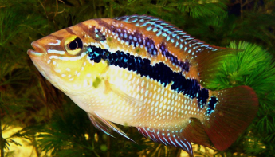
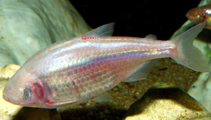
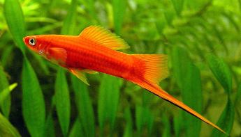
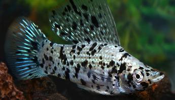

Poissons

Trichromis salvini
Côte atlantique de l'est du Mexique

Astyanax mexicanus
Sud-est du Mexique

Xiphophorus helleri
Grottes de Cueva Chica

Xiphophorus helleri
Sud-est du Mexique
Xiphophorus helleri
Sud-est du Mexique